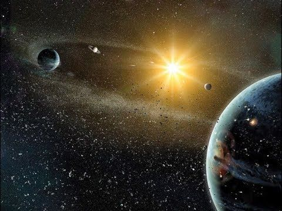

EL UNIVERSO
MÁS TEMAS QUE TE PUEDEN INTERESAR
1.- Acerca de nosotros
2.- Mi COBAO
3.- El Sistema Solar
4.-Agujeros Negros
5.-Galaxias
6.-Supernovas
7.-Via Lactea
¿Qué es?
El universo es la totalidad del espacio y del tiempo, de todas las formas de la materia, la energía, el impulso, las leyes y constantes físicas que las gobiernan. Sin embargo, el término también se utiliza en sentidos contextuales ligeramente diferentes y alude a conceptos como cosmos, mundo o naturaleza.1? Su estudio, en las mayores escalas, es el objeto de la cosmología, disciplina basada en la astronomía y la física, en la cual se describen todos los aspectos de este universo con sus fenómenos.
La ciencia modeliza el universo como un sistema cerrado que contiene energía y materia adscritas al espacio-tiempo y que se rige fundamentalmente por principios causales. Basándose en observaciones del universo observable, los físicos intentan describir el continuo espacio-tiempo en el que nos encontramos, junto con toda la materia y energía existentes en él.
Los experimentos sugieren que el universo se ha regido por las mismas leyes físicas, constantes a lo largo de su extensión e historia. Es homogéneo e isotrópico. La fuerza dominante en distancias cósmicas es la gravedad, y la relatividad general es actualmente la teoría más exacta para describirla. Las otras tres fuerzas fundamentales, y las partículas en las que actúan, son descritas por el modelo estándar.
El universo tiene por lo menos tres dimensiones de espacio y una de tiempo, aunque experimentalmente no se pueden descartar dimensiones adicionales. El espacio-tiempo parece estar conectado de forma sencilla, y el espacio tiene una curvatura media muy pequeña o incluso nula, de manera que la geometría euclidiana es, como norma general, exacta en todo el universo.

El Universo nació, según muestran las observaciones en diversos campos astrofísicos, hace aproximadamente unos 14.000 millones de años. Tanto las imágenes de campo profundo que el telescopio espacial Hubble ha tomado de las galaxias más primitivas, como las que ha tomado los satélites COBE y WMAP de las irregularidades de la radiación de fondo en la etapa del inicio de la formación de las galaxias, muestran algunas de las aglomeraciones de materia más primitivas que empezaron a ser visibles cuando el Universo dejó de ser opaco a la radiación. Tenemos la oportunidad de ver estos objetos (primitivas galaxias y cuásares) tal como eran en el pasado más remoto, hace miles de millones de años. La razón es que la luz emitida desde estos objetos ha tardado todo este tiempo para recorrer los millones de años luz que los separan de nosotros.

El Universo es esencialmente homogéneo e isótropo, manteniendo una jerarquía ascendente entre planetas - estrellas - cúmulos estelares - galaxias - cúmulos de galaxias y supercúmulos de galaxias. Está formado mayoritariamente por hidrógeno (H) y helio (He) junto a otros elementos químicos mucho menos abundantes que conforman su diversidad química. Durante los primeros minutos después del Big Bang la temperatura se redujo lo bastante para producirse lo que se llama la nucleosíntesis primordial. En esta nucleosíntesis se sintetizó a partir de protones (hidrógeno) y neutrones, hidrógeno (H), helio (He) e ínfimas cantidades de lítio (Li) y berilio (Be). Después de la formación de estos elementos químicos primordiales, la materia bajo la atracción gravitatoria se agrupó en inmensas nubes: las primitivas galaxias. A pesar de la expansión de las galaxias, localmente las nubes de hidrógeno y helio que las formaban se fueron comprimiendo nuevamente por efecto de la gravedad. Como consecuencia de ello se encendieron las primeras estrellas, que constituyeron la primera generación estelar aparecida en las primitivas galaxias. En el interior de estos globos de gas comenzaron las reacciones de fusión nuclear capaces de sintetizar a partir de hidrógeno y helio todo el resto de los elementos químicos de complejidad creciente. En cierta manera podemos considerar las estrellas como los alquimistas que han permitido que en el Universo aparezcan, después de millones de años de enriquecimiento químico, seres vivos tan complejos como nosotros.
El origen y la Evolución del Universo
El Universo nació, según muestran las observaciones en diversos campos astrofísicos, hace aproximadamente unos 14.000 millones de años. Tanto las imágenes de campo profundo que el telescopio espacial Hubble ha tomado de las galaxias más primitivas, como las que ha tomado los satélites COBE y WMAP de las irregularidades de la radiación de fondo en la etapa del inicio de la formación de las galaxias, muestran algunas de las aglomeraciones de materia más primitivas que empezaron a ser visibles cuando el Universo dejó de ser opaco a la radiación. Tenemos la oportunidad de ver estos objetos (primitivas galaxias y cuásares) tal como eran en el pasado más remoto, hace miles de millones de años. La razón es que la luz emitida desde estos objetos ha tardado todo este tiempo para recorrer los millones de años luz que los separan de nosotros.
El Universo es esencialmente homogéneo e isótropo, manteniendo una jerarquía ascendente entre planetas - estrellas - cúmulos estelares - galaxias - cúmulos de galaxias y supercúmulos de galaxias. Está formado mayoritariamente por hidrógeno (H) y helio (He) junto a otros elementos químicos mucho menos abundantes que conforman su diversidad química. Durante los primeros minutos después del Big Bang la temperatura se redujo lo bastante para producirse lo que se llama la nucleosíntesis primordial. En esta nucleosíntesis se sintetizó a partir de protones (hidrógeno) y neutrones, hidrógeno (H), helio (He) e ínfimas cantidades de lítio (Li) y berilio (Be). Después de la formación de estos elementos químicos primordiales, la materia bajo la atracción gravitatoria se agrupó en inmensas nubes: las primitivas galaxias. A pesar de la expansión de las galaxias, localmente las nubes de hidrógeno y helio que las formaban se fueron comprimiendo nuevamente por efecto de la gravedad. Como consecuencia de ello se encendieron las primeras estrellas, que constituyeron la primera generación estelar aparecida en las primitivas galaxias. En el interior de estos globos de gas comenzaron las reacciones de fusión nuclear capaces de sintetizar a partir de hidrógeno y helio todo el resto de los elementos químicos de complejidad creciente. En cierta manera podemos considerar las estrellas como los alquimistas que han permitido que en el Universo aparezcan, después de millones de años de enriquecimiento químico, seres vivos tan complejos como nosotros.

Ver Video: LA INMENSIDAD DE EL UNIVERSO - DOCUMENTAL NATIONAL GEOGRAPHIC,DOCUMENTALES NATIONAL GEOGRAPHIC